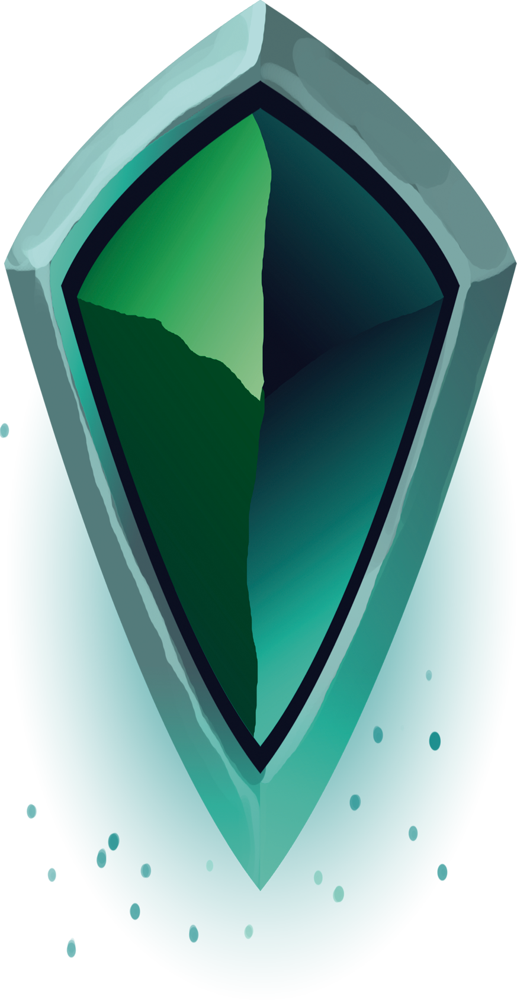

<!--   *********************************** -->
<!--         Componente Mapa General       -->
<!--   *********************************** -->

    <!-- NUBES FONDO -->
    <div id="nubes" *ngIf="mostrarNubes">
    </div>


    <div id="contenedorMapa" [ngClass]="{'mostrarNubes': !mapaCargado}" #canvasMapa class="bordeDesarrollador">

        <!-- Fondo Mapa -->
        <div id="fondoMar">
            
        </div>

        <pinch-zoom #pinchZoom id="pinch-zoom" [ngClass]="{'niebla': mostrarNieblaFija} " 
            [limitPan]="false" 
            [minPanScale]="1" 
            [disableZoomControl]="'disable'"
            [double-tap]="false"
            [limit-zoom]="10">

            <div *ngIf="mostrarCentro" id="marcadorCentro"></div>

            <!-- Mapa Global -->
            <div *ngIf="appService.estadoInMap=='global'" class="contenedorMapaGlobal">

                <div class="contenedorMascara">
                    
                    <div class="contenedorMarcadoresZonas">
                        
                    </div>
                </div>

            </div>

            <!-- Mapa Isometrico -->
            <div [ngClass]="{'niebla': mostrarNiebla}" *ngIf="appService.estadoInMap=='region'" [style.transform]="'scale('+escalaMapaIsometrico+','+escalaMapaIsometrico+')'" class="contenedorMapaIsometrico">

                <div class="wrapper" [ngStyle]="{'transform': 'scale('+mapaGeneralService.escalaIsometrico+') translate('+traslacionIsometricoX+'px, '+traslacionIsometricoY+'px)'}">

            <div class="floor">
                <!-- rotateX(55deg) rotateZ(45deg) -->

                  <div class="player"[ngStyle]="{'transform': 'translate('+(50*mapaGeneralService.radioRenderIsometrico)+'px, '+(50*mapaGeneralService.radioRenderIsometrico)+'px)'}">
                     <!-- player 1 -->
                     <!-- Flecha NorEste -->
                     <div class="player">
                         <animacionFocusComponent></animacionFocusComponent>
                     </div>

                     
                     <!-- Flecha NorOeste -->
                     
                     <!-- Flecha SurEste -->
                     
                     <!-- Flecha SurOeste -->
                     

                     <!-- Flecha NorEste -->
                  </div>
                
                     <div *ngFor="let fila of this.mapaGeneralService.renderIsometrico;let i = index" class="row">
                         <div *ngFor="let tile of this.mapaGeneralService.renderIsometrico[i];let j = index" 
                             data-cords='[tile.coordenadaX,tile.coordenadaY]' 
                             class="tile" 
                             [ngStyle]="{'transform': 'translate('+(50*j)+'px,'+(50*i)+'px)','pointer-events':'none'}" 
                             [ngClass]="renderTile(tile.coordenadaX,tile.coodenadaY)" 
                             (click)="clickTile(tile.coordenadaX,tile.coodenadaY,$event)" 
                             (auxclick)="clickTileAux(tile.coordenadaX,tile.coodenadaY,$event)" >

                                <div *ngIf="desarrollo" [ngClass]="renderTile(tile.coordenadaX,tile.coodenadaY)" class="marcador"></div>
                                
                                
                                

                         </div> 
                     </div>

                  </div> 
                </div>
            </div>

            <div class="fogwrapper">
            </div> 

        </pinch-zoom>

        <!--
            <div class="fogwrapper">
                <div id="foglayer_01" class="fog">
                  <div class="image01"></div>
                  <div class="image02"></div>
                </div>
                <div id="foglayer_02" class="fog">
                  <div class="image01"></div>
                  <div class="image02"></div>
                </div>
                <div id="foglayer_03" class="fog">
                  <div class="image01"></div>
                  <div class="image02"></div>
                </div> 
            </div> 
        -->
    </div>


